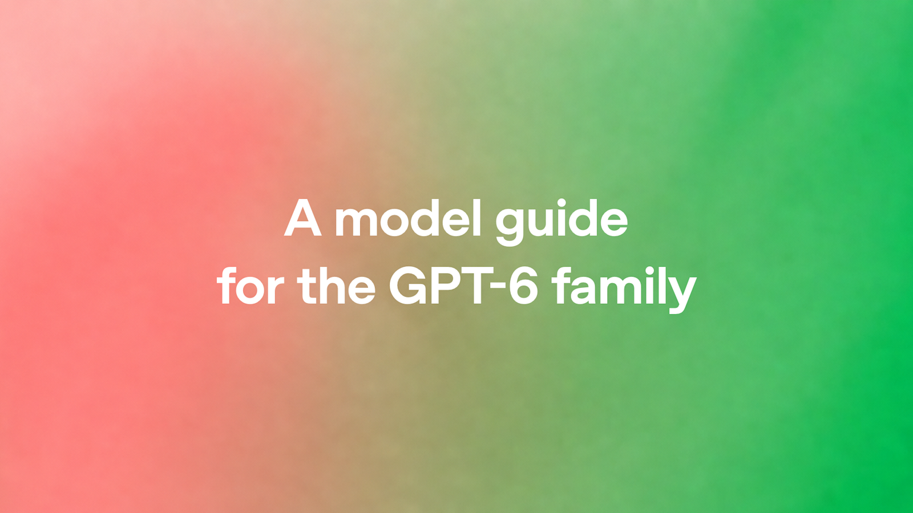
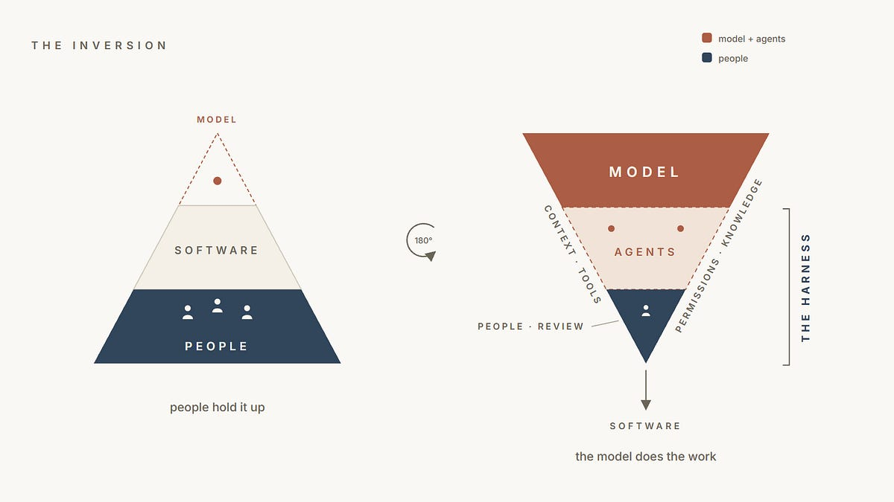
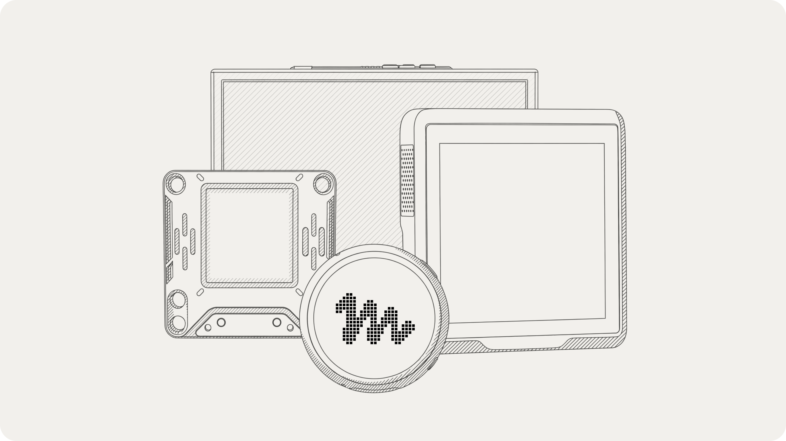

AI Intelligence Daily · 2026-10-03
专栏一｜新闻
1. Claude Code 2.1.287→2.1.288（Mods UI selection / MCP OAuth 再认证 / 长会话恢复）
事实
@anthropic-ai/claude-code latest=2.1.288；stable 仍 2.1.285。Mods 新增 $.ui.selection()；MCP 工具调用中 OAuth scope 不足 → 重新认证提示；云会话内置 gh api；Ctrl+C 后 Up 恢复草稿；/code-review --max-findings；大量 resume / compaction / 超时续写 / 插件修复。
判断
扩展面 API + 生产稳定性连续发版 → 强 A UPDATE；注意 stable 未翻。
2. Copilot code review —— REST/GraphQL API + Balanced 默认 effort
事实
可通过 REST/GraphQL 请求 Copilot code review，并可设 effort level；Balanced 为默认（Default 档自 Sep28 起采用）。Pro/Pro+/Max/Business/Enterprise generally available。
判断
评审面 API 化 → A；与昨 Computer Use 同族但不同实质。
3. openrig v0.6.4（absorb · Agent 团队网络）
事实
正式 v0.6.4（rc.1→stable）。Web UI 默认关（需 ui.enabled true）；daemon 校验 host/origin（OPENRIG_ALLOWED_HOSTS/ORIGINS）；CLI/TUI 为受支持用法。Daily 10-02 仍写 v0.6.3 → 本日报 absorb。
判断
多 agent 组网小版本 + 默认攻击面收敛 → A absorb。
4. OpenAI：A model guide for the GPT-6 family
事实
GPT-6 家族选型、reasoning effort、prompts/skills、长程任务与 computer use 实践指南。非新模型发船。
判断
用法产品化 → B；对照默认模型门控。

5. openJiuwen X-Router / model-router（自演进模型路由）
事实
开源模型路由内核（可配置/可演进/可观测）；仓 openJiuwen-ai/model-router ★10（created≈09-24）。媒体称成本可降约四成量级——以仓内复现为准。
判断
Agent 选模基建国内对照 → B；非一线 Desktop shipping；星标低需 caveat。
6. GitHub Stateless App installation tokens 全量 rollout
事实
安装令牌默认 stateless ghs_APPID_JWT，长约 520；临时 header 弃用 2026-11-30。
判断
Agent/App 身份令牌基建 → B；非 AI 发船。
专栏二｜话题热议
1. 「Every SaaS will become a harness around a model」
事实
主张多数 SaaS 收敛为模型外的 harness（工具/权限/工作流/计费）。HN 77p / 57c。
判断
与 Pi/Mods/Air「宿主 vs 模型」叙事同向——舆论定锚。

2. Muse Gadgets —— 开源硬件接 Muse
事实
gadgets.muse.ai：ESP32 / RPi 等经 SDK 接 Muse 外设。HN 105p / 53c。
判断
Muse 向物理外设延伸 → B；勿与 Mac CUA 混为同一实质。

专栏三｜开源雷达
1. mvschwarz/openrig · v0.6.4 ★4299 —— highlight absorb
Web UI 默认关；host/origin 门控；CLI/TUI 优先。见新闻条。
2. anthropics/claude-code · 2.1.288（stable 仍 2.1.285）★148972
Mods $.ui.selection；MCP OAuth 再认证；resume 修复。见新闻条。
3. OpenShell tip pin · openJiuwen · Pins 持平
OpenShell 仍 v0.1.2；tip→48d9ab3d0d9a@22:10Z（≠release）★14426。model-router ★10。Pi v1.0.0★111771 · paperclip v2026.1001.0（canary.21≠stable）· Magnitude 0.2.4 · orca/hindsight 爬升勿重抬。
重点事件新进展
- Claude Code：2.1.287→2.1.288；stable 仍 2.1.285 → 强 A UPDATE。
- Copilot：Computer Use 无再 Δ；NEW code review API @19:13Z。
- openrig：v0.6.3→v0.6.4（日间 absorb）。
- Manus 2.0.3 / MiniMax 0.6.2 / JB Air / Pi 1.0：无更高实质 shipping。
- OpenShell：仍 v0.1.2；tip→48d9ab —— 不升格 release。
- Argon / Flex / Embed5 / Sol/dots：无实质产品 Δ（仅 GPT-6 指南）。
- 未变钉：Cursor Sep23 · MCP 2026-07-28 · 小艺 0.7.3 · DeepSeek rc.2 · Qoder Flash TBD · Copilot Default Enablement→Oct 22 · paperclip canary≠stable。
今天正在形成的趋势
- 发船日后的稳定性与扩展 API 补丁波（Claude 2.1.288）。
- Agent 能力 API 化（Copilot code review 可编程触发）。
- 多 agent 网络默认收敛攻击面（openrig 关 UI + host/origin）。
- 选模/路由叙事升温（GPT-6 指南 + openJiuwen + 昨 Clef）。
- Harness 舆论定锚（HN「SaaS = harness」）。
对智能体互联网
- openrig 0.6.4 入口门控——多 agent daemon 安全默认。
- Claude MCP OAuth 增量再认证——委托会话凭证升级 UX。
- Stateless App tokens + Copilot review API——身份令牌与可编程评审。
对 Work / Agent 引擎
- Claude 2.1.288：Mod API + 长会话 resume/compaction 清单。
- Copilot code review API：嵌进 Agent Loop / CI。
- 模型路由对照：OpenAI 指南 + openJiuwen 骨架（自测后再信成本数字）。
值得继续跟踪
- Claude stable 翻牌 · CCR API effort 实机 · openrig >0.6.4
- Computer Use 组织策略 · Manus >2.0.3 · Pi Durable · Air EAP→稳定
- MiniMax Desktop >3.1.0 · docs 追上 · OpenShell >0.1.2
- Qoder Flash 结束日 · Copilot Default Enablement→Oct 22 · paperclip canary→stable
- Cursor Sep23 · MCP 2026-07-28 · openJiuwen 评测复现
未来信号
「发船」之后进入「可扩展 API + 默认安全 + 可编程触发」——差距越来越不像谁先官宣，而像谁能在升级节奏里同时收紧暴露面、打开扩展点、并把评审/选模/委托变成可编排 API。
价格 / 订阅雷达
Qoder Flash 续免（结束日 TBD）。MiniMax Flash-Preview promo 仍约 10/1–10/7。今日未见其他可核实的重要全站新调价。
信源与方法
P0+P1 国内外官网/changelog/RSS/yml/gh/npm；X credits≈$0 跳过检索。配图仅原文真实图（OpenAI guide / Harness 文 / Muse Gadgets）。完整 MD：reports/2026-10-03.md · 扫描 /workspace/daily-2026-10-03-*.md。